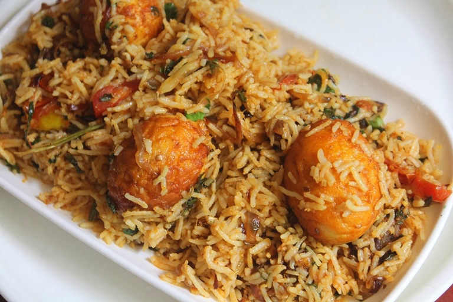

Ingredients:
1)1/2 cup ghee / oil
2)8 large eggs (hard boiled)
3)1 large onion (finely chopped)
4)2 flakes garlic (curshed)
5)2 bay leaves
6)1-inch cinnamon stick
7)1 brown Cardamom (badi elaichi)
8)4 green cardamom pods (chhoti elaichi)
9)1/2 tsp turmeric powder
10)1/2 tsp chili powder or to taste
11)2 cups Basmati (long grain) Rice
12)21/2 cups warm water
13)Salt To Taste
14)1 tsp garam masala powder
15)1 tbsp chopped coriander leaves
16)3-4 tomatoes (thickly sliced) to garnis
How to make Indian Egg Biryani :
1)Heat the oil / ghee in a deep sauce pan and fry onions and garlic together with the bay leaves, cinnamon and cardamoms, until golden.
2)Carefully prick the eggs with a fork and add to the pan.
3)Stir in turmeric, chili powder and fry for about 5 minutes.
4)Add pre-soaked rice and stir slowly and carefully for 2 minutes.
5)Pour in water and salt to taste, and cook over a modeate heat until the rice is tender and water is absorbed.
6)Sprinkle garam masala powder over it.
7)Garnish egg biryani with chopped coriander and tomato slices, serve hot.